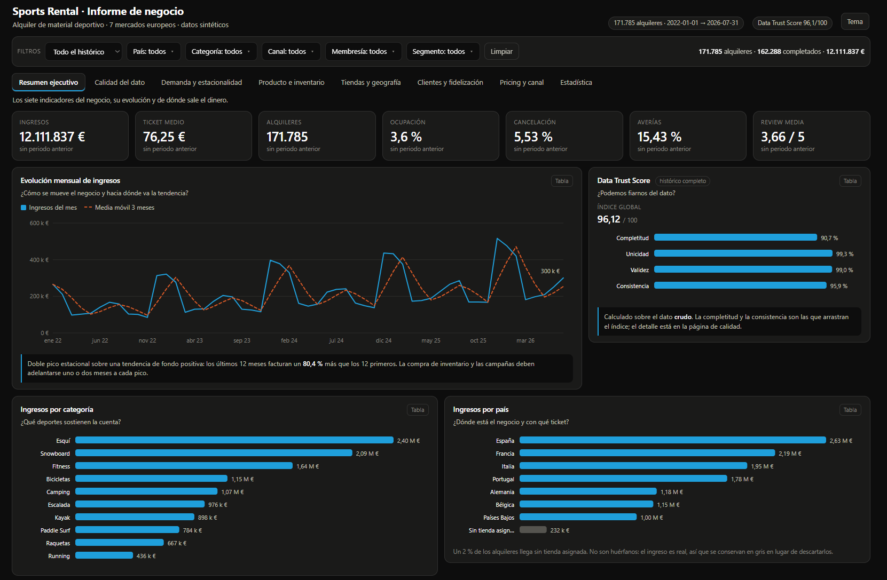

Simulación y análisis del negocio de alquiler de material deportivo de un retailer europeo: del generador de datos al cuadro de mando, pasando por la calidad del dato, el modelado en dbt y la estadística.

Cuatro CSV con relaciones causales entre variables y problemas de calidad inyectados a propósito. Semilla fija: dos ejecuciones dan ficheros idénticos.
Calidad del dato → KPIs → SQL → EDA → estadística → recomendaciones, en un notebook que ejecuta sin errores de arriba abajo.
17 modelos en capas staging → intermediate → marts, con 46 tests y los jobs encadenados sobre Databricks.
Cada página del informe termina en recomendaciones y la portada lleva las cinco de más retorno. Cada una trae acción, el hallazgo que la justifica con su cifra, impacto derivado, dueño, esfuerzo y la métrica con la que se comprobará. Cuando un hallazgo no lleva a ninguna acción, se dice.